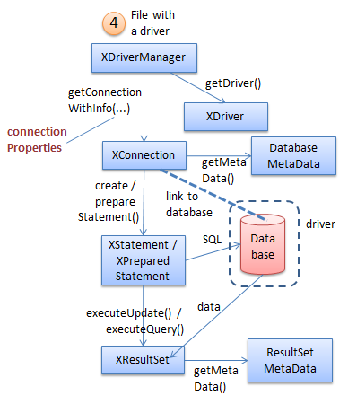

Chapter 37. Using the Driver Manager
Topics
Querying a CSV File; Querying an Access File; Querying a Calc Spreadsheet; Querying a Thunderbird Address Book
Example folders: "Base Tests" and "Utils"
This chapter looks at programming with the XDriveManager interface, which were labelled (4) in Figure 5 of the Chapter 34. Figure 1 repeats that figure but without the alternative query approaches (labels (1), (2) and (3)).

Figure 1. Querying a Document.
XDriverManager offers a low-level driver approach for accessing databases, which is similar to JDBC's DriverManager. It's rarely used to access Office databases, which are more conveniently manipulated using XOfficeDatabaseDocument (see Chapter 35). More commonly XDriverManager is employed for non-Office databases, such as MS Access files, and tabular data inside CSV files, Calc spreadsheets, and e-mail address books. This chapter includes examples of how to query these kinds of files.
The drawback of using a driver manager is the low-level information that the programmer has to supply, including the driver name, the file's URL, and the connection properties. A good source for this information is the Developer's Guide, in the "Driver Specifics" section of chapter 12. It's also accessible online at https://wiki.openoffice.org/wiki/Documentation/DevGuide/Database/Driver_Specifics (or use loGuide "Database Driver Specifics"). Unfortunately, the guide was last updated in 2008 for OpenOffice 3.1, and some details have changed since then. A better approach is to query Base's DriverManager at run time which will supply data for the version of Office that you're using. Figure 2 shows the relevant parts of the DriverManager service and its interfaces.

Figure 2. The DriveManager Service and Some of its Interfaces.
The XEnumerationAccess interface offers a convenient way to list all the drivers currently known to Base. When the programmer calls XDriveAcccess.getDriverByURL(), one of these is selected based on the URL's database protocol. XDriver.getPropertyInfo() gives access to the properties that can be set in the driver's connection.
These interfaces and methods are utilized by my Base.getSupportedDrivers() and Base.printDriverProperties() functions, as seen in CSVQuery.java explained next.
1. Querying a CSV File
CSVQuery.java opens a CSV file, examines its us-500 table, and prints the first names of the people resident in New York City:
// part of CSVQuery.java...
XResultSet rs = Base.executeQuery("SELECT \"first_name\" FROM
\"us-500\" WHERE \"City\" = 'New York'", conn);
BaseTablePrinter.printResultSet(rs);
The novel parts of CSVQuery.java are how it sets up the database connection and how it determines the table's format. The main() function:
// global private static final String FNM = "us-500.csv";
// in CSVQuery.java public static void main(String[] args) { XComponentLoader loader = Lo.loadOffice();
XDriverManager dm = Base.getDriverManager(); if (dm == null) { System.out.println("Could not access Driver manager"); Lo.closeOffice(); return; }
ArrayList
String url = "sdbc:flat:" + FileIO.fnmToURL(FNM); System.out.println("Using URL: " + url);
XDriver driver = Base.getDriverByURL(url); Base.printDriverProperties(driver, url);
// set up properties for a CSV file with no password
PropertyValue[] props = Props.makeProps(
new String[] { "user", "password",
"JavaDriverClass", "Extension",
"HeaderLine", "FieldDelimiter",
"StringDelimiter" },
new Object[] { "", "",
"com.sun.star.comp.sdbc.flat.ODriver", "csv",
true, ",", "\"\"" }
);
XConnection conn = null; try { conn = dm.getConnectionWithInfo(url, props);
// ArrayList<String> tableNames = Base.getTablesNames(conn);
ArrayList<String> tableNames = Base.getTablesNamesMD(conn);
System.out.println("No. of tables: " + tableNames.size());
System.out.println( Arrays.toString(tableNames.toArray()));
// reports all CSV tables ??
XResultSet rs = Base.executeQuery("SELECT \"first_name\" FROM
\"us-500\" WHERE \"City\" = 'New York'", conn);
BaseTablePrinter.printResultSet(rs);
} catch(Exception e) { System.out.println(e); }
Base.closeConnection(conn); Lo.closeOffice(); } // end of main()
The XDriverManager interface is obtained by Base.getDriverManager():
// in the Base class
public static XDriverManager getDriverManager()
{ return Lo.createInstanceMCF(XDriverManager.class,
"com.sun.star.sdbc.DriverManager");
}
Base.getSupportedDrivers() returns a list of all the Base drivers:
// in the Base class
public static ArrayList
Lo.qi(XEnumerationAccess.class, dm);
XEnumeration driversEnum = enumAccess.createEnumeration();
if (driversEnum == null) {
System.out.println("No drivers found");
return null;
}
ArrayList
The XDriverManager interface is cast to XEnumerationAccess, which can loop through the drivers and access their names. The list on one of my test machines is:
Drivers (11): com.sun.star.comp.sdbc.ODBCDriver com.sun.star.comp.sdbc.JDBCDriver com.sun.star.comp.sdbc.MorkDriver com.sun.star.comp.sdbc.ado.ODriver com.sun.star.comp.sdbc.calc.ODriver com.sun.star.comp.sdbc.dbase.ODriver com.sun.star.comp.sdbc.firebird.Driver com.sun.star.comp.sdbc.flat.ODriver com.sun.star.sdbcx.comp.hsqldb.Driver org.openoffice.comp.connectivity.pq.Driver.noext org.openoffice.comp.drivers.MySQL.Driver
CSVQuery.java uses the "flat" driver to access the CSV file. Later examples in this chapter employ the ADO, Calc, and Mork drivers for an Access database, a Calc spreadsheet, and a Thunderbird address book.
There's no need for the programmer to explicitly load a driver, since Base does it automatically based on the database protocol in the file's URL. The URL is constructed with the following code:
// part of CSVQuery.java...
String url = "sdbc:flat:" + FileIO.fnmToURL(FNM); System.out.println("Using URL: " + url);
XDriver driver = Base.getDriverByURL(url);
The database protocol is set to be "sdbc:flat", and the local file is converted to "file://" URL form; the resulting URL is: sdbc:flat:file:///C:/Users/Ad/Desktop/LibreOffice Tests/ Base Tests/us-500.csv Base.getDriverByURL() is:
// in the Base class
public static XDriver getDriverByURL(String url)
{ XDriverAccess driverAccess =
Lo.createInstanceMCF(XDriverAccess.class,
"com.sun.star.sdbc.DriverManager");
return driverAccess.getDriverByURL(url);
} // end of getDriverByURL()
Base.printDriverProperties() prints the driver's name, and its properties:
// in the Base class
public static void printDriverProperties(XDriver driver, String url)
{
if (driver == null) {
System.out.println("Driver is null");
return;
}
try {
System.out.println("Driver Name: " +
Info.getImplementationName(driver));
DriverPropertyInfo[] dpInfo = driver.getPropertyInfo(url, null);
if (dpInfo == null) {
System.out.println("Properties info for the driver is null");
return;
}
System.out.println("No. of Driver properties: " + dpInfo.length);
for(int i=0; i < dpInfo.length; i++)
System.out.println(" " + dpInfo[i].Name + " = " +
dpInfo[i].Value);
System.out.println();
} catch(SQLException e) { System.out.println("No properties info for the driver"); } } // end of printDriverProperties()
The method utilizes XDriver.getPropertyInfo() (see Figure 2) to access an array of DriverProperty objects.
The information printed for the CSV file's "flat" driver is:
Driver Name: com.sun.star.comp.sdbc.flat.ODriver No. of Driver properties: 11 CharSet = Extension = .* ShowDeleted = 0 EnableSQL92Check = 0 UseRelativePath = 0 URL = FieldDelimiter = HeaderLine = 0 StringDelimiter = 0 DecimalDelimiter = 0 ThousandDelimiter = 0
Knowing the property names is a good start, but what do they do? Connection properties are defined across several classes which inherit the ConnectionProperties class, as shown in Figure 3.

Figure 3. Connection Properties and Subclasses.
The most relevant class for the CSV flat file is FlatConnectionProperties, although some properties are also inherited from FileConnectionProperties and ConnectionProperties.
Some experimentation is required to decide which properties to set, but a good source of answers are the OpenOffice and LibreOffice forums where people have dealt with similar questions before. The properties are passed to the connection by calling XDriverManager.getConnectionWithInfo():
// part of CSVQuery.java...
// set up properties for a CSV file with no password
PropertyValue[] props = Props.makeProps(
new String[] { "user", "password",
"JavaDriverClass", "Extension",
"HeaderLine", "FieldDelimiter",
"StringDelimiter" },
new Object[] { "", "",
"com.sun.star.comp.sdbc.flat.ODriver", "csv",
true, ",", "\"\"" }
);
XConnection conn = dm.getConnectionWithInfo(url, props);
2. Finding out about Tables
A common need when querying databases is knowing their table schemas.
In my earlier ODB document examples, I used classes from the sdbcx module to get schema information (see Figure 10). For example, Base.getTablesNames() accesses information about all the tables in the database:
// in the Base class
public static ArrayList
Lo.qi(XTablesSupplier.class, conn);
XNameAccess tables = tblsSupplier.getTables();
String[] tableNms = tables.getElementNames();
return new ArrayList
This technique doesn't work with non-Office databases, such as CSV files, Access databases, and spreadsheets. If Base.getTablesNames() is passed a connection to these then the XTablesSupplier instance is set to null.
Fortunately, there's an alternative, lower-level approach based on using the DatabaseMetaData service (see Figure 1), as implemented in getTablesNamesMD():
// in the Base class
public static ArrayList
new String[]{"TABLE"});
XRow xRow = Lo.qi(XRow.class, rs);
while (rs.next())
names.add(xRow.getString(3)); // 3 == table name
}
catch(SQLException e) {
System.out.println(e);
}
return names;
} // end of getTablesNamesMD()
Table schema details are retrieved by querying XDatabaseMetaData, which lets
Base.getTablesNamesMD() return a list of table names. The bad news is that the
generated list is incorrect, including every CSV file name in the current directory.
This meant that I had to hardwire the "us-500" table name into the query in CSVQuery.java. rather than use the Base.getTablesNamesMD() data.
3. Querying an Access File
AccessQuery.java is almost the same as CSVQuery.java, except for the change in driver and the connection properties.
The list of drivers printed by Base.getSupportedDrivers() suggests that I should use the ADO driver to connect to Microsoft Access files since ActiveX Data Objects (ADO) is one of Microsoft's technologies for database access.
The documentation on how to use this driver is quite sparse and out of date. The URL
protocol is given as "sdbc:ado:
Base.getTablesNamesMD() returns slightly incorrect results when it examines Access files. For example, a database with four tables is reported to have five, one of them the empty string:
No. of tables: 5 [AuthorISBN, Authors, Publishers, Titles, ]
The main() function for AccessQuery.java:
//private static final String FNM = "Books.mdb";
private static final String FNM = "Books.accdb";
// in AccessQuery.java public static void main(String[] args) { XComponentLoader loader = Lo.loadOffice();
XDriverManager dm = Base.getDriverManager(); if (dm == null) { System.out.println("Could not access Driver manager"); Lo.closeOffice(); return; }
String url = "sdbc:ado:PROVIDER=Microsoft.ACE.OLEDB.12.0;
DATA SOURCE=" +
FileIO.getAbsolutePath(FNM);
// for accdb and mdb files
System.out.println("Using URL: " + url);
XConnection conn = null; try { conn = dm.getConnectionWithInfo(url, null); // no connection properties needed
ArrayList<String> tableNames = Base.getTablesNamesMD(conn);
System.out.println("No. of tables: " + tableNames.size());
System.out.println( Arrays.toString(tableNames.toArray()));
// table list includes an empty string
XResultSet rs = Base.executeQuery(
"SELECT * FROM \"Authors\"", conn);
BaseTablePrinter.printResultSet(rs);
} catch(Exception e) { System.out.println(e); }
Base.closeConnection(conn); Lo.closeOffice(); } // end of main()
4. Querying a Calc Spreadsheet
CalcQuery.java examines the "Marks" spreadsheet in totals.ods.
The Calc driver treats each named sheet in the spreadsheet as a separate table. This time, Base.getTablesNamesMD() returns a correct list of the sheet names.
private static final String FNM = "totals.ods";
// in CalcQuery.java public static void main(String[] args) { XComponentLoader loader = Lo.loadOffice(); XDriverManager dm = Base.getDriverManager(); if (dm == null) { System.out.println("Could not access Driver manager"); Lo.closeOffice(); return; }
String url = "sdbc:calc:" + FileIO.fnmToURL(FNM); System.out.println("Using URL: " + url);
XConnection conn = null; try { conn = dm.getConnectionWithInfo(url, null); // no connection properties needed
ArrayList<String> tableNames = Base.getTablesNamesMD(conn);
System.out.println("No. of tables: " + tableNames.size());
System.out.println( Arrays.toString(tableNames.toArray()));
XResultSet rs = Base.executeQuery(
"SELECT \"Stud. No.\", \"Fin/45\" FROM \"Marks\"
WHERE \"Fin/45\" < 20", conn);
BaseTablePrinter.printResultSet(rs);
} catch(Exception e) { System.out.println(e); }
Base.closeConnection(conn); Lo.closeOffice(); } // end of main()
5. Querying a Thunderbird Address Book
One reason for Office being able to access the address books of e-mail software is for implementing mail merge applications. ThunderbirdQuery.java examines the personal addresses in Thunderbird (https://www.mozilla.org/en-US/thunderbird/).
The Office documentation at https://wiki.openoffice.org/wiki/Documentation/DevGuide/Database/Driver_Specifics mentions support for Mozilla, Outlook, Outlook Express and LDAP, but several forum posts describe updates and changes.
"sdbc:address:mozilla" supports SeaMonkey Mail, the 2006 replacement for the Mozilla e-mail reader (http://www.seamonkey-project.org/), and "sdbc:address:thunderbird" connects to Thunderbird. Base uses the Mork driver (com.sun.star.comp.sdbc.MorkDriver) to access both SeaMonkey and Thunderbird.
The Thunderbird e-mail reader on my test machine has two address books, called "Personal Address Book" and "Collected Addresses", as shown in Figure 4.

Figure 4. My Thunderbird Address Books.
When I use Base.getTablesNamesMD() to list the 'tables' inside Thunderbird, it reports slightly different names : [AddressBook, CollectedAddressBook] These changes made me suspicious about the rest of the table's schema, including the names of the table's columns. Inside Thunderbird, the e-mail column is labeled "Email" (as shown in Figure 4), but is that what Base sees? Base.displayTablesSchema() lists the table and column information for the connected database, using sdbcx to get the table names. However, there's a meta data variant which utilizes Base.getTablesNamesMD(), as shown below:
// in the Base class public static void displayTablesSchema(XConnection conn) { displayTablesSchema(conn, true); }
public static void displayTablesSchema(XConnection conn,
boolean useSDBCX)
{
ArrayList
System.out.println("No tables found in database");
else {
System.out.println("No. of tables: " + tableNames.size());
ArrayList
public static ArrayList
A Base.displayTablesSchema(conn,false) call produces the following information when the connection is linked to Thunderbird:
No. of tables: 2 AddressBook: "Department" "Last Name" "Comments" "Mobile" "Phone (Work)" "City (Work)" "City" "Job Title" "Custom 3" "Work Address 2" "Custom 2" "Birth Month" "Company" "ZIP/Postal (Home)" "Custom 1" "Custom 4" "Birth Day" "Web Page (Work)" "Nickname" "Web Page (Home)" "Birth Year" "Fax" "First Name" "Address 1" "Phone (Home)" "State" "State (Work)" "Display Name" "Country" "Pager" "E-mail (2)" "Work Address" "Country (Work)" "Zip/Postal (Work)" "Address 2" "E-mail" "Mail Format"
CollectedAddressBook: "Department" "Last Name" "Comments" "Mobile" "Phone (Work)" "City (Work)" "City" "Job Title" "Custom 3" "Work Address 2" "Custom 2" "Birth Month" "Company" "ZIP/Postal (Home)" "Custom 1" "Custom 4" "Birth Day" "Web Page (Work)" "Nickname" "Web Page (Home)" "Birth Year" "Fax" "First Name" "Address 1" "Phone (Home)" "State" "State (Work)" "Display Name" "Country" "Pager" "E- mail (2)" "Work Address" "Country (Work)" "Zip/Postal (Work)" "Address 2" "E-mail" "Mail Format"
The "AddressBook" table contains two e-mail related column names: "E-mail" and "E-mail (2)". As a consequence, I wrote the query to retrieve all the e-mail addresses from the Personal Address Book as:
XResultSet rs = Base.executeQuery( "SELECT \"E-mail\" FROM \"AddressBook\"", conn); BaseTablePrinter.printResultSet(rs);
This produces textual output which matches that in Figure 4:
Printing 8 rows from table AddressBook +------------------------------+ | E-mail | +------------------------------+ | timgarner@compuserve.com | +------------------------------+ | Rohini.Deb@cenveo.com | +------------------------------+ | Patty_Mon@mcgraw-hill.com | +------------------------------+ | nutteen@gmail.com | +------------------------------+ | lors.davison@googlemail.com | +------------------------------+ | lordkiller.davison@gmail.com | +------------------------------+ | lecturer@coe.psu.ac.th | +------------------------------+ | engteacher@eng.psu.ac.th | +------------------------------+
The main() function of ThunderbirdQuery.java:
// in ThunderbirdQuery.java public static void main(String[] args) { XComponentLoader loader = Lo.loadOffice();
XDriverManager dm = Base.getDriverManager(); if (dm == null) { System.out.println("Could not access Driver manager"); Lo.closeOffice(); return; }
XConnection conn = null; try { conn = dm.getConnectionWithInfo( "sdbc:address:thunderbird", null);
ArrayList<String> tableNames = Base.getTablesNamesMD(conn);
System.out.println("No. of tables: " + tableNames.size());
System.out.println( Arrays.toString(tableNames.toArray()));
Base.displayTablesSchema(conn, false); // use getTablesNamesMD()
XResultSet rs = Base.executeQuery(
"SELECT \"E-mail\" FROM \"AddressBook\"", conn);
BaseTablePrinter.printResultSet(rs);
} catch(Exception e) { System.out.println(e); }
Base.closeConnection(conn); Lo.closeOffice(); } // end of main()